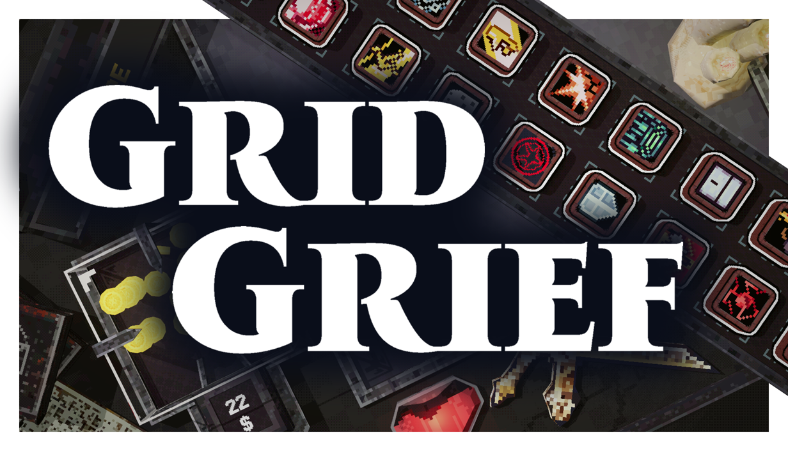

A roguelite plinko-style pinbuilder about escaping the space between heaven & hell. Forge powerful synergies, trigger chaotic screen filling effects and rack up huge scores to secure your resurrection.
Grid Grief is a roguelite pin-builder where players navigate a haunting afterlife by strategically placing pins on an ever-evolving grid. Every placement is a gamble between progression and permanent loss, forcing players to weigh immediate rewards against long-term survival.
As your run goes on, you will uncover unique pins, perks and secrets that trigger explosive combos. By collecting and placing pins, players can create "game-breaking" synergies that snowball a standard run into a dazzling, rule-bending escape attempt.
Your only escape path is to build a grid capable of shattering a god.
Grid Grief combines the plinko style of Peggle with roguelike mechanics, putting a unique pin-building twist on the genre inspired by games like Clover Pit and Nubby's Number Factory.
At its heart, Grid Grief is a dark tale of calculation and escape, where strategic placement determines whether you transcend to glory or remain lost in grief.
Logos, Screenshots & Trailer
Direct Email: synmakesgames@proton.me
Steam Page: Grid Grief on Steam
Twitter / X: @SynMakesGames
Discord: https://discord.com/invite/QNruab7Tab
TikTok: @SynMakesGames